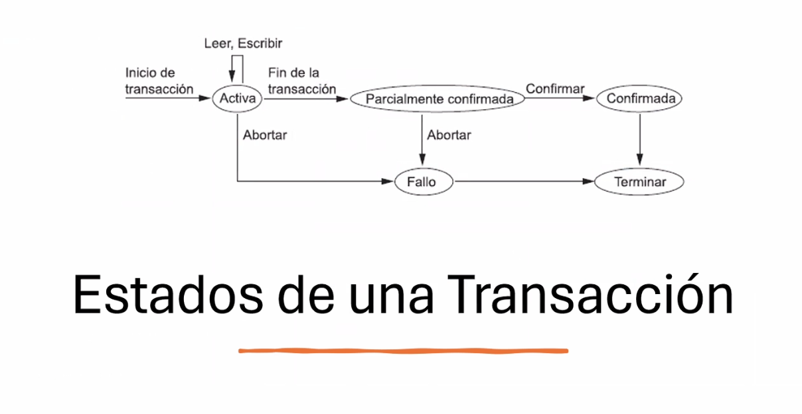

Lección 44 · Unidad 6 · Administración de transacciones · Opcional
Cuando algo falla: estados, log, UNDO y REDO
Qué puede fallar, en qué estados pasa una transacción, y cómo el log deja volver a un estado consistente.
No está en lo que el docente nombró para el 2do parcial; queda para conceptos sueltos del choice. También cubre los "tipos de falla" de la Unidad 8.
01Tipos de fallos
| Tipo (slide) | Ejemplos |
|---|---|
| Fallos de sistema | Corte de energía, error de hardware, caída del sistema operativo |
| Error de transacción | División por cero, error lógico, parámetros incorrectos |
| Excepciones | Datos inexistentes, saldo insuficiente |
| Problemas de concurrencia | Deadlocks, violación de la serialización |
| Catástrofes | Incendio, robo, sabotaje |
Preguntate de dónde viene: del entorno físico (sistema), de un error en el cálculo de la transacción (error de transacción), de una regla del negocio que no se cumple (excepción), de otra transacción (concurrencia) o de un desastre que destruye el equipo (catástrofe). "Saldo insuficiente" no es un error del programa: es una excepción que la transacción detecta.
02Estados de una transacción

| Estado | Qué significa | Se llega por |
|---|---|---|
| Activa | Está ejecutando sus lecturas y escrituras | Inicio de transacción |
| Parcialmente confirmada | Terminó su última operación, pero todavía no confirmó | Fin de la transacción |
| Confirmada | Hizo COMMIT: sus cambios ya son permanentes | Confirmar |
| Fallo | No puede seguir; sus cambios hay que deshacerlos | Abortar, desde Activa o desde Parcialmente confirmada |
| Terminar | Sale del sistema | Desde Confirmada o desde Fallo |
El resumen lista "Activa, Parcialmente confirmada, Fallida, Abortada, Terminada" y no menciona Confirmada. El diagrama de la clase tiene Confirmada como estado y "Abortar" sólo como transición hacia Fallo. Si en el choice aparece "abortada" como estado, desconfiá.
Fallo de la base o fallo del negocio
El ejemplo del cajero automático, dado en clase: pedís $2000, la base descuenta los $2000 y hace COMMIT. Después el cajero se traba y entrega sólo $1000. La base no tiene ninguna inconsistencia: la transacción se confirmó bien. El problema es físico, del cajero.
Como ya hubo COMMIT, no se puede hacer ROLLBACK. Lo resuelve un proceso de conciliación (por ejemplo, nocturno) que compara el log de la base con el registro del cajero y genera una transacción nueva que devuelve los $1000.
03El log: UNDO y REDO
"Para garantizar la recuperación frente a fallos, los sistemas gestores de bases de datos mantienen un registro o log que almacena información sobre las operaciones realizadas por las transacciones. Este registro contiene eventos como el inicio de una transacción, lecturas, escrituras, confirmaciones y cancelaciones."
| UNDO (deshacer) | REDO (rehacer) | |
|---|---|---|
| A quién se aplica | Transacciones que no llegaron a confirmarse | Transacciones confirmadas cuyos cambios aún no estaban grabados en la base |
| Qué hace | Devuelve los datos a su valor anterior | Vuelve a aplicar las modificaciones |
| Qué propiedad cuida | Atomicidad: todo o nada | Durabilidad: lo confirmado no se pierde |
Para poder hacer las dos cosas, cada escritura queda en el log con el valor anterior (para el UNDO) y el valor nuevo (para el REDO). El resumen del audio menciona además el checkpoint (punto de control): una marca en el log a partir de la cual empieza la recuperación, para no recorrer el log entero. No está en las capturas.
04Recuperabilidad de planificaciones
"Es la propiedad que garantiza que, tras un fallo, la base de datos puede volver a un estado consistente."
| Planificación | Regla (slide) | Qué evita |
|---|---|---|
| Recuperable | Una transacción sólo se confirma una vez que todas las transacciones cuyos datos leyó también se confirmaron. | Confirmar algo basado en un dato que después se deshace |
| Sin cascada | Una transacción no puede leer datos no confirmados de otra. | El "efecto dominó": que el fallo de una obligue a deshacer muchas otras |
| Estricta | Una transacción no puede leer ni escribir un dato hasta que la transacción previa que lo modificó se confirme por completo. | Todo lo anterior; es "el estándar de oro" |
Toda planificación estricta es sin cascada, y toda sin cascada es recuperable. La diferencia entre las dos últimas es una palabra: sin cascada prohíbe leer lo no confirmado; estricta prohíbe leer y escribir. El resumen del audio dice que la estricta es "la unión" de las otras dos: no es así, es la más restrictiva de las tres.
05Práctica
Una transacción de extracción detecta "saldo insuficiente" y se cancela. Según el slide, ¿qué tipo de fallo es?
¿En qué categoría pone el slide al deadlock?
Una transacción ejecutó su última operación pero todavía no hizo COMMIT. ¿En qué estado está?
Se corta la luz. Una transacción había hecho COMMIT pero sus cambios no estaban grabados en disco. ¿Qué aplica la recuperación?
¿Qué planificación evita el "efecto dominó" de deshacer muchas transacciones por el fallo de una?
El cajero descontó $2000 con COMMIT pero entregó sólo $1000. ¿Cómo se corrige?
Capturas de la clase (raw/Clase Transacciones (capturas)/, 05, 06, 10, 11 y 15).
El ejemplo del cajero y el checkpoint salen del resumen del audio de la clase. El diagrama de
estados es el de Elmasri & Navathe, cap. 17.